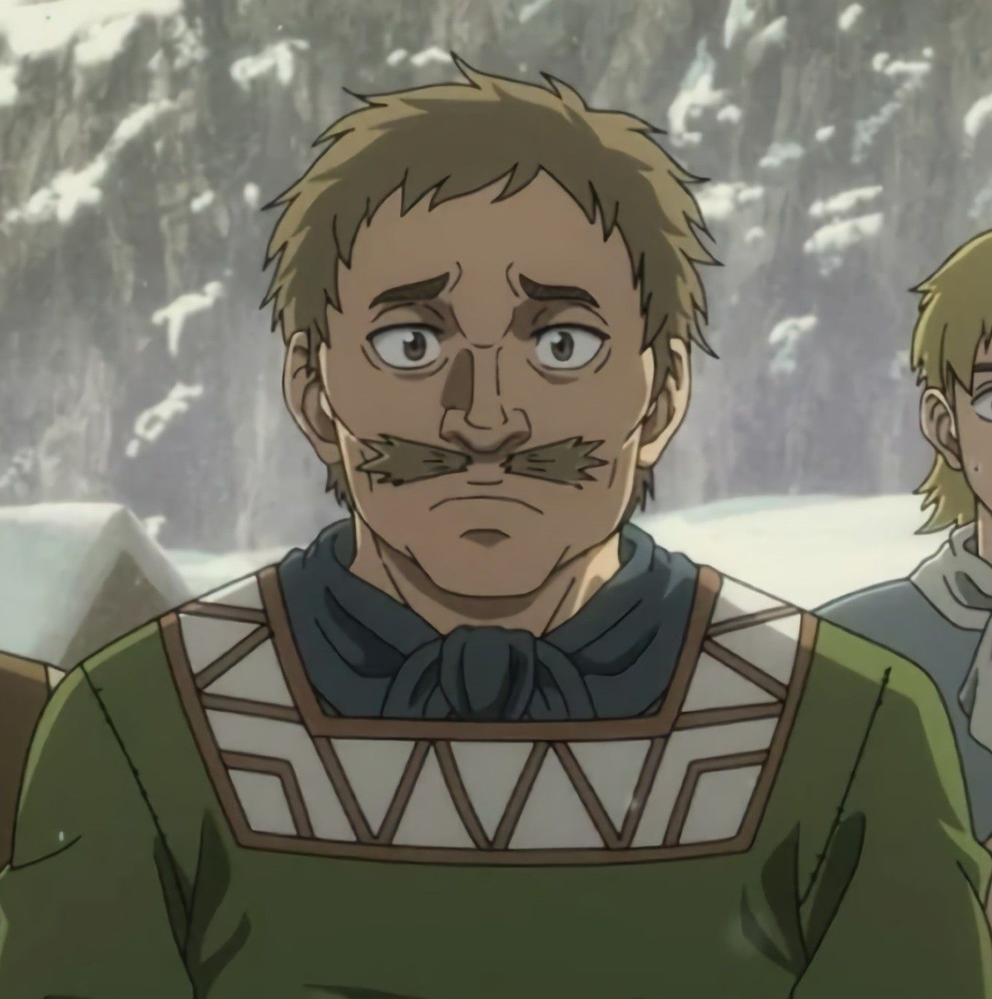
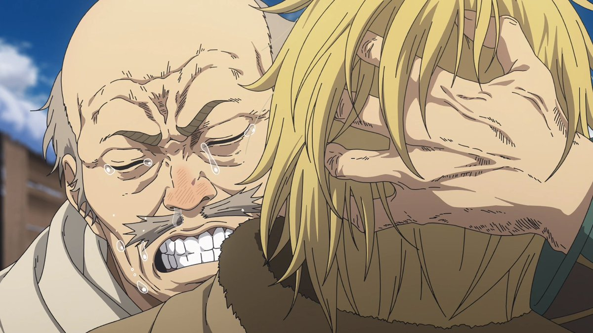

Leif
About Leif
He was a close friend to Thors Snorresson and later with his son, Thorfinn. He is one of the few to have made it to Vinland. He also owns a farm on Greenland, but no longer cares for it himself as his health is too poor. He joins Thorfinn in his journey to gain money to settle in Vinland.
Appearance
In his original appearance, Leif looked rather normal for his age, being 37, however upon his reintroduction in 1014, at around age 50, he had gone completely bald on the top of his head, his hair had turned gray, and he had developed major wrinkles on his entire face. His eyebrows also seem to have shrunk. This can be assumed as stress from how many travels he does on the sea, and for searching for Thorfinn for so long.
He looked mostly the same in 1018 and 1019 other than some slight stubble added to his chin, But during 1021 he has now aged severely, and supposedly aged particularly drastically over the course of the prior summer. He had even more wrinkles on his face, and age spots on his head. His mustache had also started to droop down, and his eyebrows also have appeared to get even smaller. His eyes also tend to be closed more often now.
Personality
Back in the past when Thorfinn was a young child, Leif kept boasting that he is a great warrior, however, the children say the adults opinions of him say that he is just a child with a beard and is useless in battle.
After Thors died, Leif blamed himself and made it his mission to find Thorfinn, who went missing and bring him back to his hometown. This continued for over a decade, showing how much Leif would go for a person he cares about and how he doesn't go back on his word, making him a loyal and kind-hearted person.